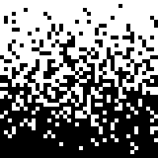

Welcome to your personal helper for your travels! We will provide you with help on navigating your way through the city! You can search for the city that you're in, and we will also give you quick, and simple access to a translator for you to have easiest time navigating your way around the city.

Street Level